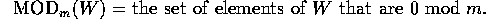
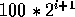

SRC Technical Note
1997-015
July 25, 1997
Syntactic Clustering of the Web
Andrei Z. Broder, Steven C. Glassman, Mark S. Manasse, Geoffrey Zweig

Systems Research Center
130 Lytton Avenue
Palo Alto, CA 94301
http://www.research.digital.com/SRC/
Copyright 1997 Digital Equipment Corporation. All rights reserved
We have developed an efficient way to determine the syntactic similarity
of files and have applied it to every document on the World Wide Web. Using
this mechanism, we built a clustering of all the documents that are syntactically
similar. Possible applications include a "Lost and Found" service,
filtering the results of Web searches, updating widely distributed web-pages,
and identifying violations of intellectual property rights.
The Web has undergone exponential growth since its birth, and this expansion
has generated a number of problems; in this paper we address two of these:
- The proliferation of documents that are identical or almost identical.
- The instability of URLs.
The basis of our approach is a mechanism for discovering when two documents
are "roughly the same"; that is, for discovering when they have
the same content except for modifications such as formatting, minor corrections,
webmaster signature, or logo. Similarly, we can discover when a document
is "roughly contained" in another. Applying this mechanism to
the entire collection of documents found by the AltaVista spider yields
a grouping of the documents into clusters of closely related items. As
explained below, this clustering can help solve the problems of document
duplication and URL instability.
The duplication problem arises in two ways: First, there are documents
that are found in multiple places in identical form. Some examples are
- FAQ (Frequently Asked Questions) or RFC (Request For Comments) documents.
- The online documentation for popular programs.
- Documents stored in several mirror sites.
- Legal documents.
Second, there are documents that are found in almost identical incarnations
because they are:
- Different versions of the same document.
- The same document with different formatting.
- The same document with site specific links, customizations or contact
information.
- Combined with other source material to form a larger document.
- Split into smaller documents.
The instability problem arises when a particular URL becomes undesirable
because:
- The associated document is temporarily unavailable or has moved.
- The URL refers to an old version and the user wants the current version.
- The URL is slow to access and the the user wants an identical or similar
document that will be faster to retrieve.
In all these cases, the ability to find documents that are syntactically
similar to a given document allows the user to find other, acceptable versions
of the desired item.
URNs (Uniform Resource Names) [6] have often been
suggested as a way to provide functionality similar to that outlined above.
URNs are a generalized form of URLs (Uniform Resource Locators). However,
instead of naming a resource directly - as URLs do by giving a specific
server, port and file name for the resource - URNs point to the resource
indirectly through a name server. The name server is able to translate
the URN to the "best" (based on some criteria) URL of the resource.
The main advantage of URNs is that they are location independent. A
single, stable URN can track a resource as it is renamed or moves from
server to server. A URN could direct a user to the instance of a replicated
resource that is in the nearest mirror site, or is given in a desired language.
Unfortunately, progress towards URN's has been slow. The mechanism we present
here provides an alternative solution.
Our approach to determining syntactic similarity is related to the sampling
approach developed by Heintze [2], though there are
many differences in detail and in the precise definition of the measures
used. Since our domain of interest is much larger (his prototype implementation
is on a domain 50,000 times smaller) and we are less concerned with plagiarism,
the emphasis is often different. Related sampling mechanisms for determining
similarity were also developed by Manber [3] and
within the Stanford SCAM project [1, 4,
5].
With respect to clustering, there is a large body of literature related
to semantic clustering, a rather different concept. Again, clustering
based on syntactic similarity (on a much smaller scale) is discussed in
the context of the SCAM project.
To capture the informal notions of "roughly the same" and
"roughly contained" in a rigorous way, we use the mathematical
concepts of resemblance and containment as defined below.
The resemblance of two documents A and B is a number
between 0 and 1, such that when the resemblance is close to 1 it is likely
that the documents are "roughly the same". Similarly, the containment
of A in B is a number between 0 and 1 that, when close to
1, indicates that A is "roughly contained" within B.
To compute the resemblance and/or the containment of two documents it suffices
to keep for each document a sketch of a few hundred bytes. The sketches
can be efficiently computed (in time linear in the size of the documents)
and, given two sketches, the resemblance or the containment of the corresponding
documents can be computed in time linear in the size of the sketches.
We view each document as a sequence of words, and start by lexically
analyzing it into a canonical sequence of tokens. This canonical form ignores
minor details such as formatting, html commands, and capitalization. We
then associate with every document D a set of subsequences of tokens
S(D, w).
A contiguous subsequence contained in D is called a shingle.
Given a document D we define its w-shingling S(D,
w) as the set of all unique shingles of size w contained
in D. So for instance the 4-shingling of
(a,rose,is,a,rose,is,a,rose)
is the set
{ (a,rose,is,a), (rose,is,a,rose), (is,a,rose,is)
}
For a given shingle size, the resemblance r of two documents
A and B is defined as
Where |A| is the size of set A.
The containment of A in B is defined as
Hence the resemblance is a number between 0 and 1, and it is always
true that r(A, A) = 1, i.e. that a document resembles
itself 100%. Similarly, the containment is a number between 0 and 1 and
if
then c(A,B) = 1.
Experiments show that these mathematical definitions effectively capture
our informal notions of "roughly the same" and "roughly
contained."
Notice that resemblance is not transitive (a well-known fact bemoaned
by grandparents all over), but neither is our informal idea of "roughly
the same;" for instance consecutive versions of a paper might well
be "roughly the same," but version 100 is probably quite different
from version 1. Nevertheless, the resemblance distance defined as
is a metric and obeys the triangle inequality. (The proof of this, as
well as most of the mathematical analysis of the algorithms discussed here
are the subject of a separate paper, in preparation.)
Fix a shingle size w, and let U be the set of all shingles
of size w. Without loss of generality we can view U as a
set of numbers. Now fix a parameter s. For a set
define
as
where "smallest" refers to numerical order on U , and
define

Theorem. Let  be a permutation of U chosen uniformly at random. Let
and
. Define F(B) and V(B) analogously. Then
be a permutation of U chosen uniformly at random. Let
and
. Define F(B) and V(B) analogously. Then
- The value
is an unbiased estimate of the resemblance of A and B.
- The value

is an unbiased estimate of the resemblance of A and B.
- The value
is an unbiased estimate of the containment of A in B.
In view of the above, we can choose a random permutation and afterwards
keep for each document D a sketch consisting only of the
set F(D) and/or V(D). The sketches suffice
to estimate the resemblance or the containment of any pair of documents
without any need for the original files.
The set F(D) has the advantage that it has a fixed size,
but it allows only the estimation of resemblance. The size of V(D)
grows as D grows, but allows the estimation of both resemblance
and containment.
To limit the size of V(D) we can proceed as follows: for
documents that have size between (say)
and 
, we store the set
. The expected size of
is always between 50 and 100. On the other hand, we can easily compute
from
. (We simply keep only those elements divisible by
.) Thus, if we are given two documents, A and B, and
was the modulus used by the longer document, we use
and
for our estimates. The disadvantage of this approach is that the estimation
of the containment of very short documents into substantially larger ones
is rather error prone due to the paucity of samples.
In our system, we implement the sketches as follows:
- We canonicalize documents by removing HTML formatting and converting
all words to lowercase.
- The shingle size w is 10.
- We use a 40 bit fingerprint function, based on Rabin fingerprints
[7], enhanced to behave as a random
permutation. (When we refer to a shingle or shingle
value in the rest of this paper, we will mean this fingerprint
value.)
- We use the "modulus" method for selecting shingles with an
m of 25.
Conceptually, applying this resemblance algorithm to the entire Web
is quite simple. We:
- retrieve every document on the Web (this data was available to us from
an AltaVista spider run),
- calculate the sketch for each document,
- compare the sketches for each pair of documents to see if they exceed
a threshold of resemblance,
- combine the pairs of similar documents to make clusters of similar
documents.
While this algorithm is quite simple, a naive implementation is impractical.
Our test case is a set 30,000,000 HTML and text documents retrieved from
the Web. A pairwise comparison would involve O(1015) (a quadrillion)
comparisons. This is clearly infeasible.
The magnitude of the input data imposed severe restrictions on the design
of our data structures and algorithms. Just one bit per document in a data
structure requires 4 Mbytes. A sketch size of 800 bytes per document requires
24 Gbytes. One millisecond of computation per document translates into
8 hours of computation. Any algorithm involving random disk accesses or
that causes paging activity is completely infeasible.
In the design of our algorithms, we use a single, simple approach for
dealing with so much data - divide, compute, merge. We take the data, divide
it into pieces, compute on each piece separately and then merge the results.
We choose the piece size m so that the computation can be done entirely
in memory. Merging the results is a simple, but time consuming process
due to the required I/O. Each merge pass is linear, but log(n/m) passes
are required, so the overall performance of the process is dominated by
a O(n log(n/m)) term.
We perform the clustering algorithm in four phases. In the first phase,
we calculate a sketch for every document. This step is linear in the total
length of the documents.
In the second phase, we produce a list of all the shingles and the documents
they appear in, sorted by shingle value. To do this, the sketch for each
document is expanded into a list of <shingle value, document ID>
pairs. We sort this list using the divide, sort, merge approach outlined
above.
In the third phase, we generate a list of all the pairs of documents
that share any shingles, along with the number of shingles they have in
common. To do this, we take the file of sorted <shingle, ID> pairs
and expand it into a list of <ID, ID, count of common shingles>
triplets by taking each shingle that appears in multiple documents and
generating the complete set of <ID, ID, 1> triplets for that shingle.
We then apply the divide, sort, merge procedure (adding the counts for
matching ID - ID pairs) to produce a single file of all <ID, ID, count>
triplets sorted by the first document ID. This phase requires the greatest
amount of disk space because the initial expansion of the document ID triplets
is quadratic in the number of documents sharing a shingle, and initially
produces many triplets with a count of 1.
In the final phase, we produce the complete clustering. We examine each
<ID, ID, count> triplet and decide if the document pair exceeds our
threshold for resemblance. If it does, we add a link between the two documents
in a union-find algorithm. The connected components output by the union-find
algorithm form the final clusters. This phase has the greatest memory requirements
because we need to hold the entire union-find data structure in memory.
After we have completed the clustering, we need several auxiliary data
structures to make queries more convenient. We produce:
- the mapping of a URL to its document ID:
- Fingerprint each URL and pair it with the document ID.
- Sort the <fingerprint, ID> pairs by fingerprint value.
- When given a URL, we fingerprint it, find it in the sorted list and
output the document ID.
- the mapping of document ID to the cluster containing it
- this is a inversion of the cluster to document ID mapping, ordered
by document ID
- the mapping of a cluster to the documents it contains
- this is the output of the clustering algorithm
- the mapping of a document ID to its URL
- an array of all the URLs in document ID order
Very common shingles (for us, this means shingles shared by more than
1000 documents) are a performance problem during the third phase of our
algorithm. As we have discussed, the number of document ID pairs is quadratic
in the number of documents sharing a shingle. Overly common shingles can
greatly expand the number of the document ID pairs we have to deal with.
When we looked at the most common shingles, we found that they were
nearly all mechanically generated. They include:
- HTML comment tags identifying the program that generated the HTML
- Shared header or footer information on a large number of automatically
generated pages (forms or views on databases)
- Extremely common text sequences (the numbers 3-12, ...)
- Mechanically generated pages with artificially different URLs and internal
links
These common shingles either have no effect on the overall resemblance
of the documents or they have the effect of creating a false resemblance
between two basically dissimilar documents. Therefore, we ignore all very
common shingles.
Identical documents do not need to be handled specially in our
algorithm, but they add to the computational workload and can be
eliminated quite easily. Identical documents obviously share the same
set of shingles and so, for the clustering algorithm, we only need to
keep one representative from each group of identical
documents. Therefore, for each document we generate a fingerprint that
covers its entire contents. When we find documents with identical
fingerprints, we eliminate all but one from the clustering
algorithm. After the clustering has been completed, the other
identical documents are added into the cluster containing the one kept
version.
We can expand the collection of identical documents with the
"lexically-equivalent" documents and the
"shingle-equivalent" documents. The lexically-equivalent
documents are identical after they have been converted to canonical
form. The shingle-equivalent documents are documents that have
identical shingle values after the set of shingles has been selected.
Obviously, all identical documents are lexically-equivalent, and all
lexically equivalent documents are shingle equivalent.
We can find each set of documents with a single fingerprint.
Identical documents are found with the fingerprint of the entire
original contents. Lexically-equivalent documents are found with the
fingerprint of the entire canonicalized contents. Shingle equivalent
documents are found with the fingerprint of the set of selected
shingles.
The second and third phases of our algorithm require a great deal of
disk space for the <shingle, ID> pairs and the <ID, ID, count>
triplets. We have investigated a method for more directly determining document
resemblance from the document sketches.
Sketches are an effective method for estimating the resemblance of two
documents because they are easily compared, canonical representations
of the documents. Hence, we can estimate the resemblance of two documents
with the ratio of the number of shingles they have in common to
total number of shingles between them.
Similarly, we can estimate the resemblance of two sketches by
computing the meta-sketch (sketch of a sketch). We compute super shingles by
sorting the sketch's shingles and then shingling the shingles. The document's
meta-sketch is then determined by its set of super shingles. If two documents
have even one super shingle in common, then that means their sketches have
a sequence of shingles in common.
If the number of shingles in a super shingle is chosen correctly, then
it is highly probably that two similar documents will have
at least one common super shingle. In addition, the existence
of a single common super shingle means it is likely that two
documents resemble each other. To compute resemblance with
regular shingles, we need to collect and count the common shingles.
To detect resemblance with super shingles, we only need
to find a single common super shingle. So, super shingles are a
simpler and more efficient method of computing resemblance.
A clustering algorithm based on super shingles is:
- Compute the list of super shingles for each document.
- Expand the list of super shingles into a sorted list of <super shingle,
ID> pairs.
- Any documents that share a super shingle resemble each other are added
into the cluster. (If we want a higher threshold we can compute their actual
resemblance.)
So, the entire third phase of the basic algorithm where we generate
and merge the document ID pairs is not needed.
Unfortunately, super shingles are not as flexible or as accurate as
computing resemblance with regular sketches. First,
super shingles do not work well for short documents.
Short documents do not contain many shingles and so,
even with regular shingles, the error in estimating
document resemblance is greater. Super shingles make this problem worse.
A super shingle represents a sequence of shingles, and so, shorter documents,
with fewer super shingles, have a lower probability of producing a common
super shingle.
Second, super shingles cannot detect containment. Suppose we have
two documents and the larger one completely contains the smaller one.
Then, the sketch of the larger document includes all of the shingles
of the smaller document along with additional shingles from its extra
material. When we sort the shingles for the larger document and
calculate its super shingles, the extra shingles will be interspersed
with the common shingles. Therefore, the sequences of shingles - and
thus the super shingles - for the larger document will be different
than those of the smaller document.
While we will soon discuss some specific applications related to
clustering the Web, we also want to point out that our resemblance and
clustering techniques are not limited to text documents.
Our general technique only depends on the ability to extract a
set of features from objects. Once we are given the set of
features for each object, we can then apply the algorithms described
above to compute the resemblance of the objects and to cluster
groups of similar objects.
For documents and objects other than text, there are many potential features
for computing resemblance. An audio message of human speech could have
features based on sequences of phonemes. For documents in
foreign language, the features could be labels from a multi-lingual
concordance. Musical features could be based on Sequences of notes or chords.
As techniques are developed for identifying features in other data
types, there are no limits on the objects that can be compared for
resemblance: images, video sequences, or databases.
Now, we will consider some of the Web-related applications of our
methods. Once we have the sketches, clusters and auxiliary data
structures, we can use them for several interesting applications. As
we discuss the different applications, we will consider their storage
and performance characteristics. There are two approaches:
- Basic clustering
The most straightforward application is a service to locate highly similar
alternatives to a given URL. In this case, the user has the URL of a document
and for some reason wants to find another document that resembles it. This
relationship is exactly what clustering gives us.
Given a complete clustering and the auxiliary files for mapping URLs
to document IDs and mapping document IDs back to URLs, we can very efficiently
compute all of the URLs for the documents in the cluster.
Unfortunately, clustering must be done with a single fixed threshold
for resemblance and we must decide in advance if we want contained and
containing documents included in the clusters. We can get around this and
produce clusters based on a variety of policies by repeating the final
phase of the clustering algorithm for each different policy. This phase
is relatively inexpensive and the output clusters are relatively compact.
Another issue is that basic clustering can only support queries about
URLs that are part of the input, and the clusters are based on the contents
of the URLs at the time they were retrieved. We can solve this problem
by computing sketches for new or modified documents on demand.
- On the fly resemblance
If we are able to keep the full sketches of every document and the
file of sorted <shingle, ID> pairs, then we can perform on the
fly resemblance. In this case, the input can be any document;
either from a URL or stored locally; whether is was part of the initial
clustering or not; whether it has changed or not. The algorithm is as
follows:
- Get the sketch of the input document by
- Looking up the sketch for the URL, or
- Computing the sketch from the document itself.
- Look up each shingle from the input document in the sorted <shingle,
ID> file.
- For each document that shares a shingle, maintain the count of common
shingles.
- Based on the number of shingles in each document, compute the resemblance
and contained/containment value.
- Sort, threshold and present the result.
This method requires more space and time, but it offers greater flexibility
than precomputed clusters. It also allows any document, even a document
that was not part of the original input, to be compared for resemblance.
We have found that the performance of this method is quite good (a few
seconds) unless the input document is quite big or resembles a large number
of documents.
Everyone is aware that URLs are not good forever. Pages get
renamed, pages move, web sites get rearranged, servers get renamed,
and users change internet service providers. Every good URL eventually
becomes yet another dead link.
Our clustering method can create a World Wide Web lost and found,
where we automatically notice that the URL for a page has changed and
find its new URL. Instead of just clustering the current contents of
the Web, we cluster the contents of the web from multiple sweeps over
the web done at different times. As long as any one sweep has found a
particular URL, we can find its current location by taking the most
recent URL from its cluster. The clustering algorithm remains the
same, except that the URLs of the document are also tagged with a
date.
Clustering the documents found in a series of sweeps can be made relatively
efficient as it is not necessary to perform the entire clustering from
scratch each time. Instead, we need only sketch the documents from the
last sweep and merge them into the existing clusters. In addition, there
will be a large number of identical documents between sweeps and these
can be extracted early in the algorithm.
Current search engines like AltaVista try to return the most relevant answers
to a query first. Often this means several similar versions of a document
are returned as separate entries. Clustering allows us to display this
similarity to the user and present the search results more compactly.
The user selects the preferred version to
retrieve and avoids examining nearly identical copies.
Some important information is widely disseminated and quoted
throughout the Web, with slight local changes. For instance there are
many slightly reformatted, full or partial copies of an FTC (Federal
Trade Commission) ruling regarding consumer credit. If this ruling
were to change, one would hope that FTC would try to notify all the
sites with any version of this document. The cluster containing the
original ruling would assist in producing the list of contacts. In
contrast, with a search engine a query wide enough to cover all the
variations would result in a large number of irrelevant hits that
would have to be filtered out.
In addition to updating URLs, we can use the technique of comparing
sketches over time to characterize the behavior of pages on the web. For
instance, we can observe a page at different times and see how similar
each version is to the preceding version. When we have this information
for many web pages, we can answer some basic questions about the Web:
- How often do pages change?
- How much do they change per time interval?
- How often do pages move? Within a server? Between servers?
- How long do pages live? How many are created? How many die?
A better understanding of these issues will make it possible to build
better proxies, search engines, directories and browsers.
One final application is the detection of illegal copies or modifications
of intellectual property. Given a source document we can detect if all
or parts of it have been substantially copied or if small changes were
made to documents that were supposed to be left unchanged (eg license agreements).
However, the security of our approach is rather limited, since we have
a single, static sketching policy. The approach taken by Heintze [2]
whereby a new set of samples is selected from a larger stored set, is more
secure at the cost of a substantial storage penalty.
We have implemented the sketching, clustering and clustering on the
fly algorithms and produced a working demonstration system.
We tested our algorithms on a collection of 30,000,000 HTML and
text documents from a walk of the web performed by AltaVista in April
of 1996. The total input data was 150 Gbytes (an average of about 5k
per document). The file containing just the URLs of the documents took up 1.8
Gbytes (an average of 60 bytes per URL). We sketched all of the
documents with 10 word long shingles to produce 40 bit (5 byte)
shingle fingerprints. We kept 1 in 25 of the shingles found.
There were about 600M shingles so the raw sketch files took up 3
Gbytes (5 bytes per shingle). During the first phase of the clustering
algorithm, this expanded to about 5.5 Gbytes (9 bytes per entry - 5
bytes for the shingle and 4 bytes for the document ID). At the
maximum, we required 10 Gbytes of storage because we need two copies
of the data during the merge operation.
In the third phase - the creation of <ID, ID, count> triples -
the storage requirements grew to about 20 Gbytes. (We save some space because
there are shingles that only appear in one document, but we lose on the
quadratic expansion of document ID lists to document ID pairs. The maximum
storage reflects the fact that the document ID pairs are initially duplicated
in each separate file. However, they are gradually combined together as
the files are merged.) At the end of the third phase, the sorted file of
<ID, ID, count> triples took up 6 Gbytes.
The final clustering phase is the most memory intensive phase since
we want the entire union-find data structure to be in memory. The final
file containing the list of the documents in each cluster took up less
than 100 Mbytes.
We calculated our clusters based on a 50% resemblance. We found 3.6
million clusters containing a total of 12.3 million documents. Of these,
2.1 million clusters contained only identical documents (5.3 million documents).
The remaining 1.5 million clusters contained 7 million documents (a mixture
of exact duplicates and similar). Here is how the processing time for the
different operations breaks down (if an operation is parallelizable, then
much of it - usually all but the final merge - can be performed independently
on many machines at once):
| Phase |
Time (CPU-days) |
Parallelizable |
|
Sketching
|
4.6
|
YES
|
|
Duplicate Elimination
|
0.3
|
|
|
Shingle Merging
|
1.7
|
YES
|
|
ID-ID Pair Formation
|
0.7
|
|
|
ID-ID Merging
|
2.6
|
YES
|
|
Cluster Formation
|
0.5
|
|
| Total |
~10.5
|
|
We believe that our system provides new functionality for dealing with
the sea of information on the Web. It allows users to find syntactically
related documents anywhere on the World Wide Web. It allows search engines
to better present results to their clients. And, it allows for new services
to track URLs over time, and detect and fix links to moved URLs.
We also believe that our techniques can generalize to other problem
domains. Given any technique that extracts a set of features from
an object, we can measure the similarity of any two objects or cluster
the sets of similar objects from a large number of objects.
We wish to thank Greg Nelson for helping to develop the ideas behind
the resemblance definition and computation.
- S. Brin, J. Davis, H. Garcia-Molina.Copy Detection
Mechanisms for Digital Documents. Proceedings of the ACM SIGMOD Annual
Conference, San Francisco, CA, May 1995. Available from
http://www-db.stanford.edu/pub/brin/1995/copy.ps
- Nevin Heintze. Scalable Document Fingerprinting.
Proceedings of the Second USENIX Workshop on Electronic Commerce, Oakland,
California, , November 18-21, 1996. Available from: http://www.cs.cmu.edu/afs/cs/user/nch/www/koala/main.html
- U. Manber. Finding similar files in a large
file system. Proceedings of the 1994 USENIX Conference, pp. 1-10, January
1994.
- N. Shivakumar, H. Garcia-Molina. SCAM: A Copy
Detection Mechanism for Digital Documents. Proceedings of the 2nd International
Conference on Theory and Practice of Digital Libraries, Austin, Texas,
1995. Available from http://www-db.stanford.edu/~shiva/Pubs/scam.ps
- N. Shivakumar and H. Garcia-Molina. Building
a Scalable and Accurate Copy Detection Mechanism. Proceedings of the
3nd International Conference on Theory and Practice of Digital Libraries,
1996. Available from http://www-db.stanford.edu/~shiva/Pubs/performance.ps
- URN Resource Names, IETF Working
Group
- M. O. Rabin, Fingerprinting by random polynomials.
Center for Research in Computing Technology, Harvard University, Report
TR-15-81, 1981.
Systems
Research Center
Digital Equipment Corporation
Department of Computer
Science
University of California, Berkeley